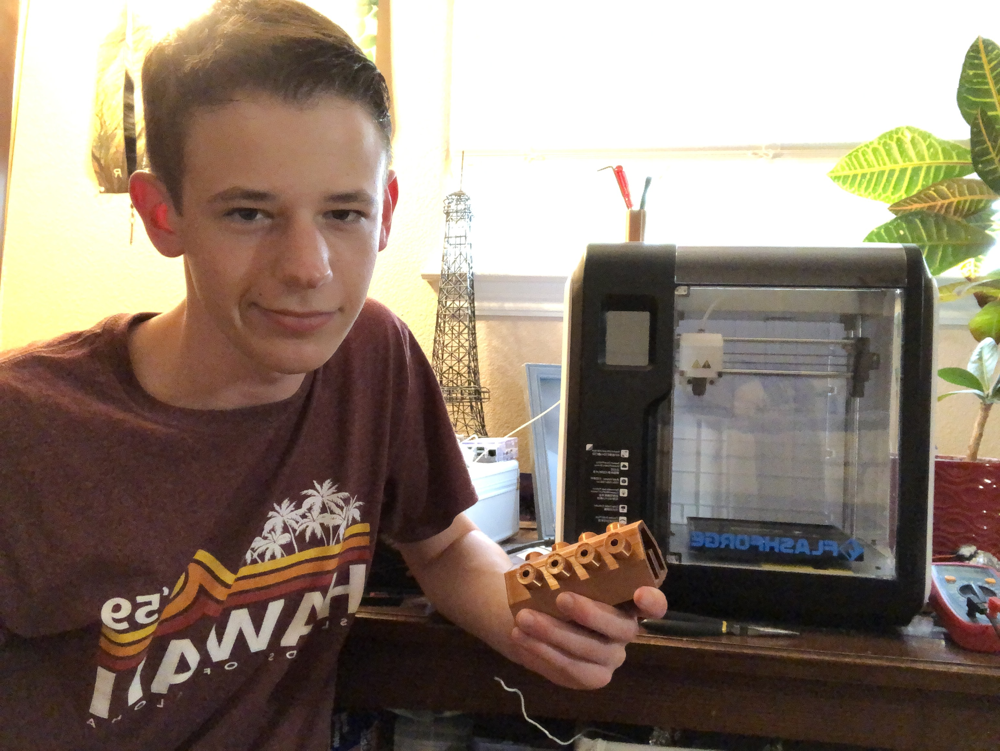

I was born in 2004 in Portland Oregon. When I was five, I moved to California. And for the past 9-ish years I have lived in the golden state of California. Ever since I was 5 I was good at building things. If someone told me about electricity and circuits I would have probably tried to make a simple light or something. I wanted to be a electrical engineer since.
I developed a few skills over the years, like planning of what a certain project would look like. In my years at high school I took Computer Science Priciples and Principles of Engineering, then I went into Digital Electronics to satify my passin for Electrical Engineering. At home, I worked on some other projects, such as the pre-coded radar and a few personal repl.it projects, such as this one, as well as a ton of electrical and mechanical engineering projects.
Like many people, I too believe that if you work hard on something and keep coming back to it, you will succeed. So with these projects, I try, try again if something doesn't work properly. I also kind of want to own a mechanical engineering company in the future, that involves a little software. I also hate writing a lot. Nowadays, I am mostly involed in electrical engineering.